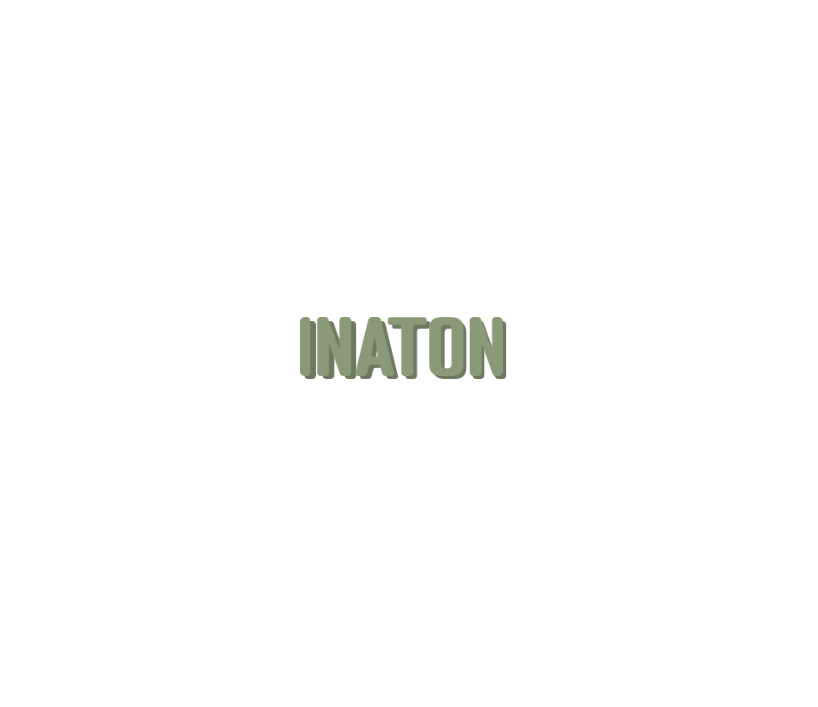
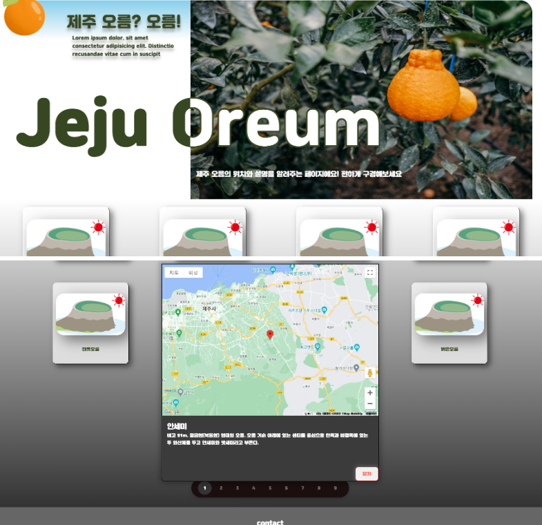
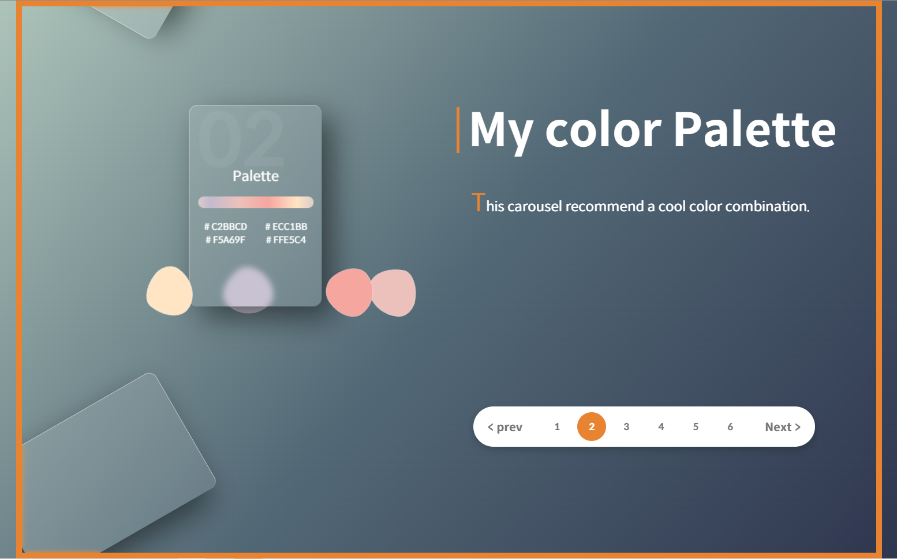

진취적이지만 꼼꼼한, 열정 있으며 밝은!
항상 나아가려하고 현재에 안주하지 않습니다. 프로젝트를 진행하며 팀장으로서 매일 예외처리 테스트를 통해 디테일을 놓치지 않았고, 누구보다 밝게 일합니다!

엄선된 프로젝트
모두 웹 접근성과 UX를 최대한 고려하여 시멘틱한 태그를 사용하였고 직접 디자인했습니다.
-

INATON
"공간"이라는 키워드를 중심으로 모여든 사람들이 자신만의 아지트를 소개하는 SNS입니다.
- 팀 프로젝트로써 컴포넌트단위로 협업을 하고자 리액트와 깃플로우 방법을 사용하였습니다.
- UI의 편리한 유지보수를 위해 아토믹 디자인패턴과 스타일드 컴포넌트를 활용하였습니다.
-

제주 오름? 오름!
제주도 오름을 소개하는 페이지 입니다. 각 오름마다 위치정보가 구글맵으로 표시됩니다.
- 구글맵 API와 제주오름 API를 함께 사용하였고 모듈단위로 JS파일을 분리하여 코드의 가독성을 높였습니다.
- 오름의 갯수를 사용자 입장에서 직관적으로 알 수 있도록 페이지네이션 기능을 활용했습니다.
-

My color Palette
캐러셀을 구현하고자 만든 컬러팔레트 페이지입니다 카드마다 조화로운 컬러모음을 추천해주는 웹 페이지입니다
- 페이지 네이션에서 다음, 이전 버튼의 기능을 편하게 구현하고자 jQuery를 사용했습니다.
개인 이력
함께하기를 좋아하는 저는 같이 성장하기 위해 이러한 일에 참여했습니다.
-

동료특강
50명이 넘는 동료들 앞에서 동료특강을 진행했습니다.
KNOW MORE
실습의 중요성을 강조하고자 [리액트를 활용한 투두리스트 만들기]라는 주제로 구현과정을 선보였고 동료들에게 "과제에 대한 두려움이 있었으나 이번 강의가 좋은 울림이 되었다." 라는 평을 받았습니다. -

-

Stack
- Frontend
- JavaScript / HTML / CSS
- SCSS / Tailwind / Bootstrap
- React
- jQuery / Chart.js / D3 /
- Tools
- Git / GitHub
- Discord / Notion
학력 및 경력
-
강원대학교 지구환경시스템공학과
2016.03 ~ 2022.02 -
아쿠아픽 생산관리직 인턴
2020.12 ~ 2021.02